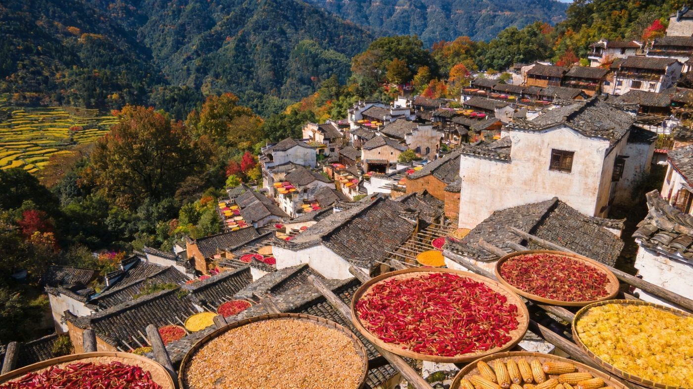
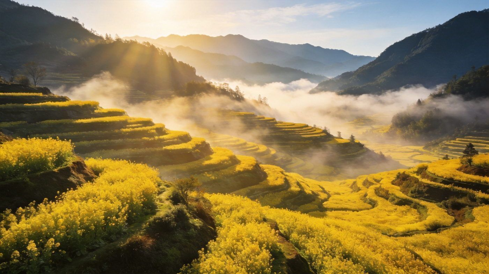

🌻 婺源篁岭 · WUYUAN HUANGLING GUIDE
婺源篁岭双版徽州指南
「中国最美乡村」+ 崖上古村，油菜花海与晒秋民俗兼备。核心看点：篁岭晒秋（晒工坊）、江岭梯田油菜花、庆源/李坑徽派古村。求快走 2 天精华版，想深度走 3 天深度版。适合 1–3 人，含行程 / 住宿 / 美食 / 预算 / 出行方式对比。
📍 目的地：婺源（江西）👥 1–3 人⏱️ 2 天 / 3 天双方案💰 人均预算已附🌸 春季油菜花 / 秋晒秋
✨2 天精华 · 花海版
核心策略：D1 篁岭晒秋古村，D2 江岭梯田油菜花，把篁岭、江岭两大王牌一次打满。
👥 1–3 人适配：篁岭靠索道、江岭可自驾，2–3 人 自驾或包车最省时；预算按 人均 标注。春季 3–4 月看油菜花，秋季 10–11 月看晒秋。
🗺️ 行程安排
DAY 1 · 篁岭晒秋古村
🚄/🚗 抵达婺源站/县城🚡 篁岭索道上山（B上A下）
📸 晒工坊·五桂堂·垒心玻璃桥🏨 宿山上美宿或晓鳙村
💡 篁岭联票（门票+往返索道）约 145 元，线上约 135 元；推荐 B 线上山近梯田、垒心桥，A 线下山不走回头路。晒工坊三楼俯瞰古村晒秋全景，清晨 7 点人少光线柔。
DAY 2 · 江岭梯田花海
🌅 清晨 6:30 江岭晨雾花海🌼 山顶观景台俯瞰万亩梯田金花
🚗 下午 返程
⚠️ 江岭（油菜花）凭票可自驾上山换景交接驳，私家车不能直达核心花海；最佳花期 3 月中旬–4 月上旬，清晨 6:30–8:30 晨雾与云海最出片。
🌸3 天深度 · 古村版
在花海版基础上补庆源、李坑等徽派古村落，加一段村庄徒步，节奏更松、人文更浓。
👥 1–3 人适配：3 天景点分散、古村间有车程，包车/自驾最顺；庆源较偏，建议留足时间。预算按 人均 标注。
🗺️ 行程安排
DAY 1 · 篁岭晒秋 + 夜游
🚡 索道上山逛天街古巷📸 晒工坊·五桂堂·花溪水街
🌃 夜游流光森林/板凳龙（周一/四/六）🏨 宿山上美宿
💡 篁岭联票约 145 元；住山上可错峰赏晨景夜景，索道末班约 21 点，不住山务必赶在 21 点前下山。
DAY 2 · 江岭花海 + 庆源古村
🌅 清晨江岭晨雾梯田花海🏞️ 庆源古村油菜花·老宅慢逛
🚶 村庄田埂徒步🏨 宿庆源或返县城
⚠️ 江岭门票约 80 元（含景交）；庆源江岭西北较偏，门票约 20 元，春季油菜花配徽派老宅很出片，建议包车前往。
DAY 3 · 李坑小桥流水 + 返程
🌉 李坑·小桥流水人家🛍️ 婺源县城买皇菊/米酒伴手礼
🚗 下午 返程
💡 李坑是徽州「小桥流水人家」代表，门票约 60 元（或在婺源 12 景点通票内）；人较多，建议上午早些去。
⭐特色景点 · 单独详览
把婺源最有辨识度的 3 个点单独拎出来说清楚——值不值得去、怎么玩。

篁岭 · 崖上晒秋
国家5A
篁岭 · 晒秋人家 & 晒工坊观景
建在山坡上的崖上古村，因「地无三尺平」，村民在屋顶搭架用竹匾晾晒农作物，形成独特「晒秋」农俗，2014 年入选「最美中国符号」，2023 年入选联合国世界旅游组织「最佳旅游乡村」。春晒笋干、秋晒辣椒皇菊，四季皆景。
👍 必去理由：篁岭是婺源人气第一站。联票（门票+往返索道）约 145 元；晒工坊三楼俯瞰古村全景是核心机位，天街古巷、花溪水街、垒心玻璃桥也很好拍。秋季 9.25–11.20 晒秋最美。
配图：原创生成 · 无版权风险

江岭 · 梯田花海
溪头乡
江岭 · 梯田油菜花天花板
婺源最东北的梯田油菜花胜地，被誉为中国四大油菜花海之一、婺源油菜花的「天花板」。万亩梯田沿山坡铺展，白墙黛瓦的徽派村落散落其间，晨雾与云海让整片金色花海如同水墨仙境。
👍 必去理由：春日必打卡。花期 3 月中旬–4 月上旬（3/20–30 黄金期），门票约 80 元（含景交）；1 号观景台山顶俯瞰最震撼，清晨 6:30–8:30 晨雾最佳，私家车需停山下换观光车。
配图：原创生成 · 无版权风险
庆源古村 · 花海人家
段莘乡
庆源古村 · 小众花海徽宅
藏在江岭西北的高海拔古村，比起喧嚣景区更安静质朴，春季油菜花与粉墙黛瓦老宅相映，溪水绕村、古桥横跨，是婺源「养在深闺」的出片小众地，也是摄影爱好者偏爱的写生点。
👍 必去理由：想避开人潮的深体验。门票约 20 元；与李坑这类成熟古村比更清幽，春季与江岭串游最佳，建议包车前往（位置较偏）。
配图：原创生成 · 无版权风险
🚗怎么去：自驾 vs 包车 vs 跟团
婺源景点分散在乡间，怎么走影响体验。下面把三种方式讲透。
婺源自驾/包车/跟团三种出行方式对比
| 维度 | 🚗 自驾 | 🚙 包车 | 🚌 跟团 |
|---|
| 核心体验 |
时间自由、随时停拍花海晨雾，累了就歇 |
司机熟路到点放行，同样自由，免乡间导航烦恼 |
行程固定、有讲解省心，但相机位节奏偏赶 |
|---|
| 适合享受开车、喜欢随走随拍的游客 | 适合不想折腾方位、带娃拖行李的游客 | 适合第一次来、图省心的游客 |
| ✔ 自由度最高 | ✔ 免导航压力、可拼车分摊 | ✔ 全程安排讲解 |
| 费用参考 |
2–3 天租车+油费约 400–700 元/车 | 包车约 400–650 元/天（含司机） | 人均约 800–1500 元起 |
|---|
| ✔ 3 人拼车人均最省 | ✘ 人少时人均偏高 | ✘ 可能有自费/购物、节奏紧 |
| 💡 一句话建议：有车且 2–3 人 → 自驾；不想自己开想自由 → 包车；带长辈小孩图省心 → 跟团。 |
|---|
👥 1–3 人怎么选：2–3 人自驾/包车最划算；单人可拼车/跟团，避免为偏远古村折返。篁岭必须乘索道，江岭、庆源处乡间建议自驾或包车前往。
🏨住宿推荐
三档价位，均为 2 人房计。
经济型山下晓鳙村民宿
约 200–300 元/晚 · 人均 100–150
篁岭/江岭脚下村落民宿，性价比高，需坐索道上下山，错过晨景夜景。
中端舒适县城舒适酒店 / 天街民宿
约 300–500 元/晚 · 人均 150–250
婺源县城通勤方便，天街民宿紧挨美食街，出行便利。
高端体验山上晒秋美宿 / 景观度假
约 799 元起/晚 · 人均 400+
古宅改造、推窗见晒秋梯田，部分含双人套票，能错峰赏晨景夜景。
🍄婺源必吃清单
徽州土菜 + 山间小吃，天街食府人均 50–60 元就能吃得很好。
💰预算对比（人均）
区间为保守–宽松，实际以淡旺季与选择为准（不含往返大交通）。
婺源2天与3天方案人均预算对比
| 项目 | 2天精华版 | 3天深度版 |
|---|
| 大交通（往返婺源） | 约 200–400 | 约 200–400 |
|---|
| 住宿 | 1 晚 100–250 | 2 晚 200–480 |
|---|
| 餐饮 | 约 150–280 | 约 220–420 |
|---|
| 门票（篁岭/江岭/庆源等） | 约 225–290 | 约 300–380 |
|---|
| 交通/包车（人均分摊） | 约 150–300 | 约 250–450 |
|---|
| 合计 · 人均 | 约 900–1600 | 约 1400–2300 |
|---|
💡 怎么省：婺源 12 景点通票（约 180 元，5 日有效）玩多个古村比单买划算；篁岭线上提前购票约省 10 元；工作日比周末人少一半、住宿更便宜。
🧭避坑 & 实用贴士
- 花期要掐准：油菜花最佳 3 月中旬–4 月上旬（江岭偏早、庆源略晚），错过就看不到漫山金黄，去前看实时花期播报。
- 索道末班早留意：篁岭索道 17:30 后班次减少、末班约 21 点，不住山上务必赶在 21 点前下山。
- 私家车不能直达核心花海：江岭看花海需停山下换景区观光车；庆源位置偏，交通不便建议包车。
- 穿防滑鞋、带外套：篁岭全程多石阶、山间昼夜温差大，别穿高跟鞋，备雨伞、防晒和充电宝。
- 小吃到明码摊位买：景区内小吃选明码标价摊，避免乱价；部分「晒秋道具」是塑料，别被现场效果误导。